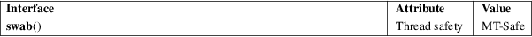

swab − swap adjacent bytes
Standard C library (libc, −lc)
#define
_XOPEN_SOURCE /* See feature_test_macros(7) */
#include <unistd.h>
void
swab(const void from[restrict
.n], void to[restrict
.n],
ssize_t n);
The swab() function copies n bytes from the array pointed to by from to the array pointed to by to, exchanging adjacent even and odd bytes. This function is used to exchange data between machines that have different low/high byte ordering.
This function does nothing when n is negative. When n is positive and odd, it handles n−1 bytes as above, and does something unspecified with the last byte. (In other words, n should be even.)
The swab() function returns no value.
For an explanation of the terms used in this section, see attributes(7).

POSIX.1-2008.
POSIX.1-2001, SVr4, 4.3BSD.
bstring(3)